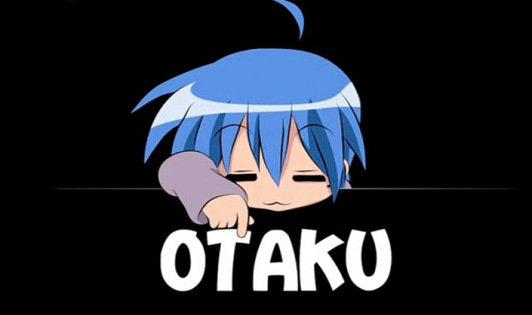

- Inicio
- Personajes
- TOP recompensas
- Historia
- Eiichiro Oda
- Diccionario
Diccionario Otaku

Seas ya un otaku veterano o estés empezando tus pinitos en este apasionante mundillo, habrás notado que la terminología en los círculos frikis orientales es muy amplia, y con este articulo quiero que estés al día con todo lo necesario para convertirte en un experto en manga, anime y cultura friki japonesa.
Lista de palabras mas utilizadas
- Otaku
-
El término otaku se emplea popularmente en Japón y en otros países y se ha convertido en sinónimo de persona con aficiones apasionadas al anime / manga.
- Chibi
-
Persona Pequeña o niño. Estilo de dibujo muy concreto en el que destacan las cabezas grandes, con ojos grandes y cuerpos pequeños.
- Kohai
-
Palabra usada para referirse a alguien que tiene menos experiencia que tú, lo que convierte al que tiene más en su Senpai, siendo términos que van cogidos de la mano.
- Senpai
-
Palabra usada para referirse a alguien que tiene mas experiencia en un área o entorno en concreto o está posicionado en un puesto de trabajo o curso superior. Este termino está muy ligado a Kohai, ya que uno depende del otro.
- Sensei
-
Maestro o persona sabia. Fuera de japón es utilizado sobre todo en deportes como el karate, aikido, judo, kendo, etc…
- Oniisan
-
Hermano mayor, usado tanto para hermanos mayores con lazo familiar como para amigos o conocidos mayores que tu, pero aún en edad joven con los que se tenga confianza.
- Oneesan
-
Hermana mayor, pero aún joven, también puede usarse de manera informal en chicas o mujeres mayores que tú con las que tengas confianza.
- Isekai
-
Subgenero de fantasía en el que un/una protagonista de del mundo real acaba en un mundo de fantasía.
- Mecha o Meka
-
Subgénero dentro de la Ciencia Ficción en el que tienen mucha importancia los robots gigantes controlados por uno o varios pilotos.
- Shonen
-
Genero de manga y anime enfocado para chicos jóvenes en el que sobre todo podemos encontrar historias de acción con toques de humor, trabajo en equipo y superación.
- Itadakimasu
-
El equivalente a ¡Que aproveche! Frase que se dice antes de comer.
- Kawaii
-
Adorable, bonito o tierno. Expresión muy utilizada para decir que algo es “mono” o “cuki”.
¿Donde puedo verlo?
Suscribete
César Negre Gómez | 1º ASIX | Lenguaje de marcas